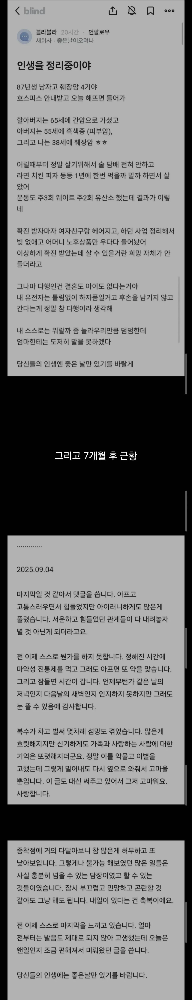

삶의 마지막에서도 다른 사람을 위로하고 가셨네요.
내일이 있다는건 축복입니다.....
감사한 마음으로 하루하루 살아야겠어요..
편히 쉬시길..

삶의 마지막에서도 다른 사람을 위로하고 가셨네요.
내일이 있다는건 축복입니다.....
감사한 마음으로 하루하루 살아야겠어요..
편히 쉬시길..
이미 3마리얌
암은 진짜 유전과 운으로 정해지는거같음,,

개드립에서 몇 번을 봤지만 볼때마다 슬프네 ㅠㅠ
저런 노력을 했는데도 걸렸다는게 참 안타깝다...
ai야 제발 저런 쓰레기같은 질병 좀 없애줘..
ㄹㅇ 신은 들어줄 생각 1도 없어보임 ㄷㄷ
우리도 췌장암인데 힘들다. 좀만 치료 될만하면 계속 재발 함..
췌장암은 중입자 치료 안됨?
유전은 참 무서워
요즘에는 그래도 수술법, 항암제 발전해서 나아지고 있다던데, 다른 암보다는 생존율 낮긴 하더라
나랑동갑인데 안타깝네..
개붕이들 결혼안해도 되니까 다들 행복하게 살아라
이거 그거아닌감. 부모님한테 마지막인 마음으로 선물사드렸는데 교환반품하신거..ㅋㅋㅋ
아닌거같아 아버지도 55살에 가셧다닠가
운빨좆망겜
ai 병신새끼 특이점 타령 그만하고 저런거나 좀 고쳐봐라
췌장암 ㅈㄴ무서움 다른 암은 조기진단이라도되지
마운자로 뷰작용 췌장암 ㄷㄷㄷㄷㄷ
유전자의 저주군
주작임... 주작임.... 아무튼 주작임...
Ai
여기에 붐업이 왜 있냐
지인이 췌장암4기인데 마음이 좀 그렇다. 3차항암 중이신데 제발 잘 듣길, 제발 기적이 일어났음 좋겠다고 늘 빌어....
붐업 싸이코패스 씨발련들은
애초에 가족 지인에게도 ㅈㄴ 손절당햇겟지만
지금처럼 티좀 더 내고 다녀주라.
칼손절해야하니까
아니 할아부지 아부지 암이었으면 검사를 빡시게 했어야지 이사람아 ㅠㅠ 주작아니냐 이거 슬프당
붐업갈기면 진짜 인간아님